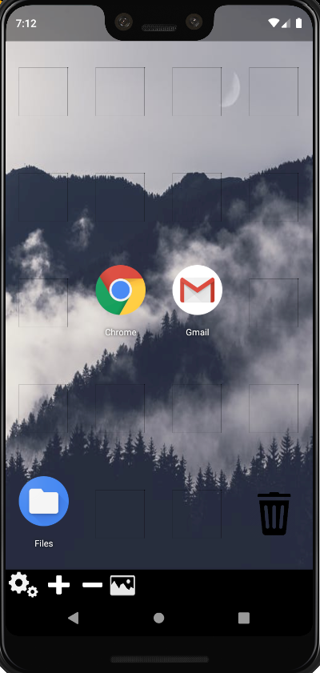
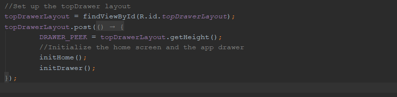
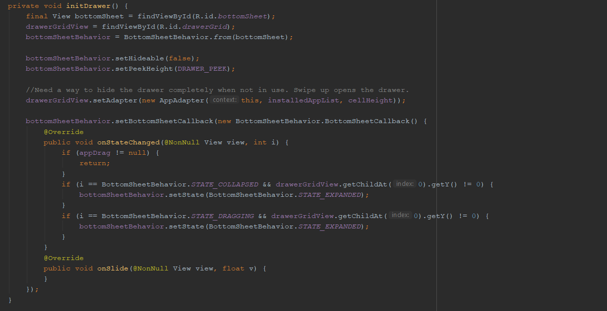
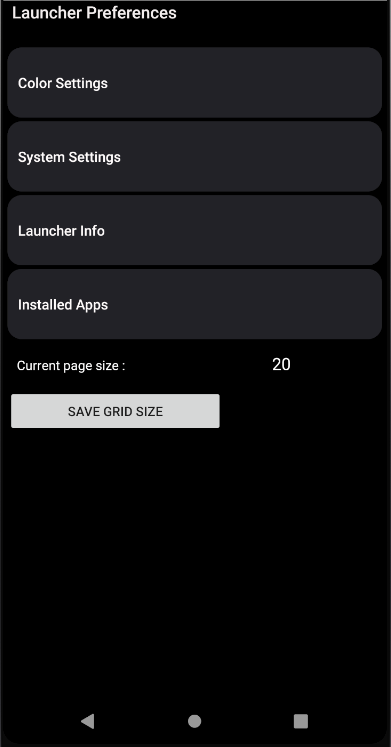
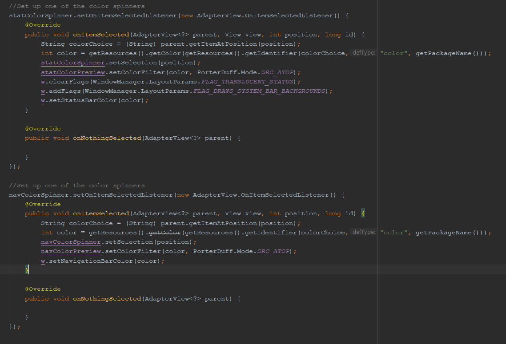
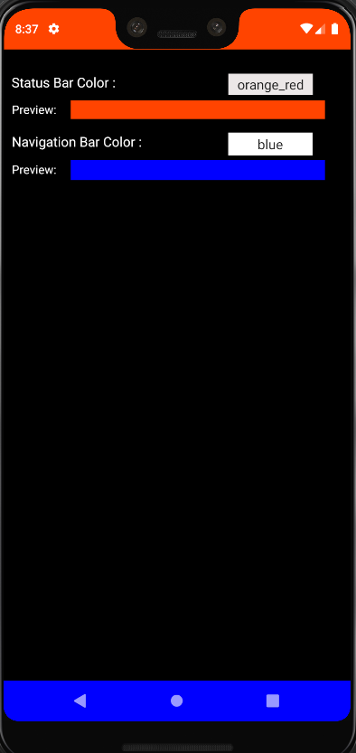
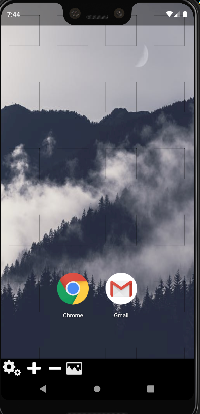

We wanted to try and create a basic Android Launcher using up to date code and a newer API (API 28). This project was designed to show off the main features of a home screen launcher. The small number of tutorials we found were helpful but a lot of the code needed to be modified to support the newer API.
The main screen which houses a ViewPager that the user can interact with is set up in the onCreate() method of our MainActivity. This code sets up a topDrawerLayout which we used to combine the Home Screen, App Drawer, and the top Buttons seen in the large phone picture above.
The initHome() function establishes the first page of our home screen, takes care of setting up the view and also controls the functionality for adding pages and deleting pages. There are other functions inside here but that is the main overview. The black boxes on the home screen are placeholders to represent the different grid spots. We would have much rather had these grid spots highlight themselves during a drag instance but as I note later, we could not figure that out in time.
(Note: Currently, the very top left grid spot of a page does not function properly, we tried figuring it out but as of this post it is still broken. All other spots work as intended)
The initDrawer() function is called in order to set up the app drawer. This drawer is populated using a function which gets all installed apps. It controls the behavior of swiping up and down within this drawer. In general, we are setting up a grid within a FrameLayout which contains a LinearLayout. Here is the code for that functionality:
These two are the main bulk of what is viewed on the main home screen and what controls a large amount of the functionality. There are Adapters and other pieces at play in our Launcher but these are the basic methods.
This menu is its’ own class, and the button for it / intents are set up in the onCreate() method of our MainActivity.
The Color Settings option in the settings screen takes the user to a screen where they can change the color of both the navigation bar and the status bar. We were unable to figure out how to make this persist between views but here is a part of the code:
These two spinners are populated by a list of color choices. When a user selects one it gets that color and sets both the color preview bar and either the Navigation Bar, or the Status Bar to the color the user selected. Again, we managed to get this working, but only within this view. Here’s what it looks like with a few colors selected:
When the user hits the “Save Grid Size” button, the current page the menu was opened on (in our case, page 2) will be changed to have that number of grid spots. Currently a user is only allowed to have greater than 1 and less than or equal to 100 grid spots on any given page, but all of those numbers can be adjusted. The result of this is the following:
This is impossible to see with a still picture, but there are now 40 grid spots on this one page which can be gone through by swiping up and down. The user can still switch between other pages of different sizes as normal, but this adds a vertical element that many launchers do not have. Any number under or equal to 20 will be displayed without any vertical scrolling, any more than that causes the vertical scrolling to be active. This gives a user the ability to have different pages of many different sizes.
We ran into some issues where the very top of the screen would be cut off as well as the bottom of the screen, but apps were still able to be placed around and launched. In general we may need to edit the view options for this to be perfect.
Here is the code which manages the grid aspects:

We had to handle three cases, greater than 20, less than 20, and then also exactly 20 for the cases that 20 is greater than or less than the number that is already there. This does the calculations needed and adjusts the grid as expected. The cut off portions of code are creating new AppObjects to put within the new grid spots. When removing we simply remove whatever is at index 0, so in general this function completely ignores any user placed apps that were already there.
We wanted to try to implement Drag and Drop functionality for the AppObjects and could not figure it out in time for this project’s due date. We were able to set a ShadowDrag for the app objects but never anything beyond that. This would get rid of the need for an always visible trash can as well as the “long tap, then tap” functionality we currently have for placing, moving, and deleting apps from the screen.
The app images for the AppObjects themselves are not all uniform and would look much nicer with a complete set of uniform images. There are not many issues with it but this would make everything more uniform. There are likely other view related issues that could be better as well.
In general, this project was challenging and very informative, we feel that the knowledge of Android Studio that we gained from this far outweighed any negative experiences.
One YouTube series was used to help us with the main bulk of this project (NovaLauncher Tutorial):
https://www.youtube.com/channel/UCQ5xY26cw5Noh6poIE-VBoThere were parts of it we changed but it was generally the best possible tutorial we were able to find. Everything else was figured out using Google’s own documentation as well as simply Googling much of the functionality we wanted.
Here is a link to our GitHub where this project resides. I am hoping this can be useful to someone out there trying to create a simple Android launcher. We had trouble finding resources on this and wanted to share what we came up with in the end.
Our Github repository